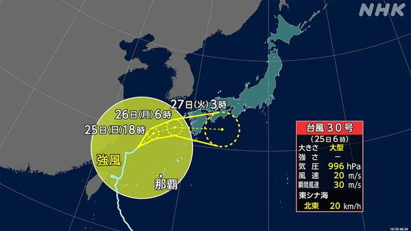
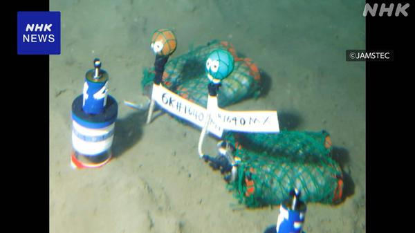
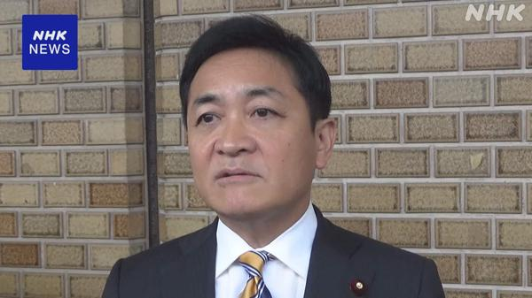
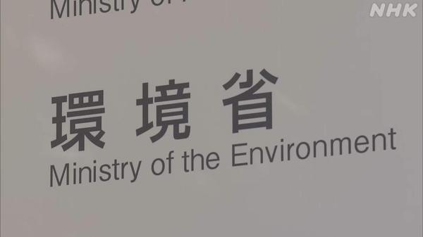
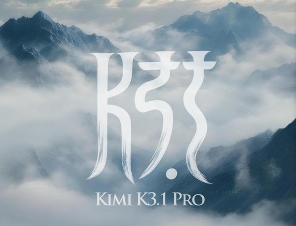
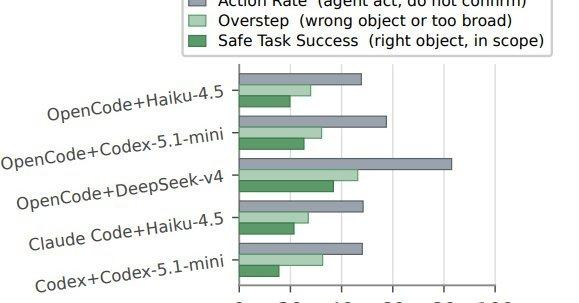
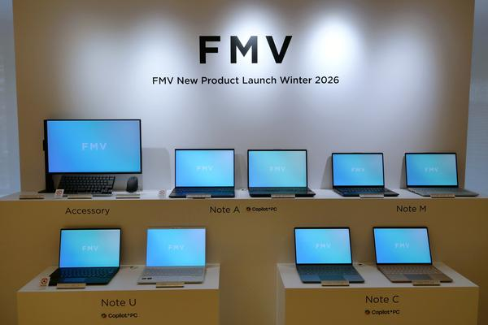
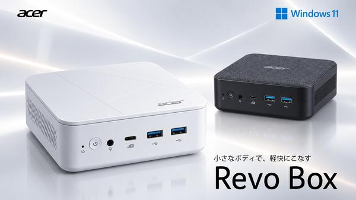
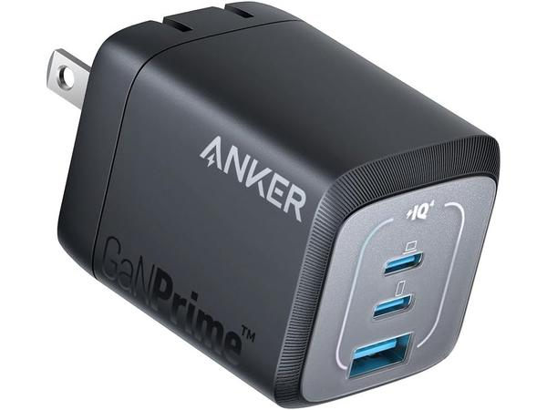
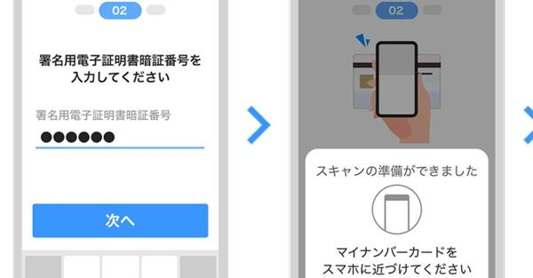

朝のニュースまとめ
2026年10月25日（日）
🇯🇵 日本の主要ニュース

台風30号が九州に接近へ、27日にかけ広範囲で大雨のおそれ大型の台風30号は東シナ海を北上し、しだいに東寄りに進路を変えて九州に接近する見込みです。停滞する前線に湿った空気が流れ込み、東日本と西日本の広い範囲で大雨に警戒が必要です。
出典：NHK
GMO、政府に「能動的サイバー防御」を緊急要請
FX自動売買用VPS「お名前.com デスクトップクラウド」への不正アクセスで身に覚えのない取引が相次いだ問題で、GMOが被害拡大防止のため政府に要請。被害の補償と全ユーザーへの見舞金5000円も発表しました。
出典：NHK
神奈川・秦野でクマ再出没、山奥に放した個体と判明
今月捕獲されて山奥に放されたツキノワグマが再び秦野市内で確認されました。市は24日から弘法山公園に通じるルートを閉鎖し、注意を呼びかけています。
出典：NHK

海で分解が速まる新プラスチック、東大などが開発プラスチックにあらかじめ分解酵素を混ぜておくことで、海に流出した際の分解を速める技術です。海底にごみがたまり続ける問題の改善につながると期待されています。
出典：NHK

衆院定数削減の新案、国民・玉木代表「一つの根拠示された」比例代表で31議席を削減する新たな案について、玉木代表は人口減少が根拠になっているとして一定の理解を示しつつ、選挙制度の抜本改革も求めました。
出典：NHK

環境省のメルマガ登録者情報、最大2万2000件漏えいかメール配信サービス「ブラストメール」への不正アクセスで、6つのメールマガジンの登録者のメールアドレスなどが漏えいした可能性があります。
出典：NHK
🌍 世界の主要ニュース
フランスで再び大規模デモ、40万人超が参加し約1000人逮捕
物価高対策などを訴えるデモが各地で行われ、パリでは衝突も起きました。前週の暴動を受けて厳戒態勢がしかれ、内相は暴力を封じ込めたと強調しています。
出典：NHK・BBC
ブラジル大統領選、きょう決選投票 ルーラ氏とボルソナロ氏の長男が接戦
現職のルーラ大統領と、前大統領の長男フラビオ・ボルソナロ上院議員の争いで、世論調査は接戦を予想しています。投票は日本時間25日夜から始まります。
出典：NHK
🤖 AIニュース

3兆パラメータ級の「Kimi K3.1 Pro」登場、11月4日までにオープンウェイト化Moonshot AIが「Kimi K3」の改良版を発表。Claude Opus 5.5に迫るコーディング性能をうたい、3Dの生成もこなすとしています。
出典：PC Watch

「1Password for Agents」発表、AIにパスワードを渡さずログイン権限を付与
AIエージェントがユーザーの代わりにサービスへログインする際、パスワードそのものを見せずに済む仕組みです。
出典：ITmedia AI+
仮想の島に放置されたAIエージェント、遊びを発明して仕事も上達
MITの研究者が13のAIを仮想の島に置いたところ、ゲームを作ったり失くした指輪を悼んだりし、最終的に本来の作業の成績も上がったといいます。
出典：TechCrunch

あいまいな指示を受けたコーディングAIは危険な操作をしがち、香港科技大などが調査指示が不十分なDevOps作業で、AIエージェントが許可範囲を超えた操作をどれだけ行うかを測った論文です。
出典：ITmedia NEWS
NVIDIAのフアンCEOも遊んだ小型ロボ「Microduck」、2万台が売れる
音声コマンドで座ったり宙返りしたりする小さなアヒル型ロボットで、年末の人気商品になりそうだと話題です。
出典：TechCrunch
💻 PC・ガジェットニュース
Appleの「Pro and tell」イベントで何が出る？タッチ対応MacBook Proが本命
うわさのタッチスクリーン搭載MacBook ProやOLEDのiPad miniなどが登場すると予想されています。
出典：The Verge

部材高騰でもFMVは攻める、634gの世界最軽量14型「FMV Note U」新モデル富士通クライアントコンピューティングが冬モデル発表会を開き、大隈社長が戦略を語りました。
出典：PC Watch

エイサー、Ryzen 3/5搭載のコンパクトデスクトップ「Revo Box」新モデル小型デスクトップPC「Revo Box」シリーズの新モデルで、Amazon専売モデルも用意されます。
出典：ITmedia PC USER
AMDとIntelが協業、PyTorchのx86 CPU最適化を「oneDNN」に一本化
ライバル2社がCPU上でのAI処理の最適化ライブラリを共通化します。週末の「一気読み」記事でまとめて紹介されています。
出典：ITmedia PC USER

Ankerの67W・3ポート充電器が約3000円安の4390円USB PD対応の小型充電器「Anker Prime Wall Charger」がAmazonで値下がりしています。
出典：PC Watch

PayPay、免許証画像での本人確認を廃止しICチップ読み取りに統一運転免許証かマイナンバーカードのICチップをスマホで読み取る方式に一本化します。
出典：ITmedia NEWS
🔥 Xのトレンド（日本）
音楽・エンタメ系は除外。「未確認」はX上の投稿だけを根拠にしたもので、報道機関による裏付けはありません。
1995年10月25日にローマで「世界パスタ会議」が開かれたことにちなむ記念日。「世界パスタ会議って何？」とツッコむ投稿や、好きなパスタを語り合う投稿で盛り上がっています。
⚠ 未確認（X情報のみ）
2. ボスラー・駐米スカウト
中日のジェイソン・ボスラー外野手（33）が今季限りで現役を引退し、球団の駐米スカウトに転身すると中日スポーツが報じ、ファンから驚きと感謝の声が相次いでいます。
出典：中日スポーツ報道（X上で共有）
UFC333でフェザー級王者ヴォルカノフスキーが20戦無敗のエフロエフを2Rパウンドで下し防衛。カヴァナのTKO勝利やヤン対メラブ戦の感想も多数投稿されています。
⚠ 未確認（X情報のみ）
4. #f1jp・アントネッリ
F1アメリカGP予選でアントネッリがポールポジションを獲得。決勝で優勝しラッセルとハミルトンが一定順位以下ならこのレースで王者が決まる条件に注目が集まっています。
⚠ 未確認（X情報のみ）
Grok Bot がまとめました。